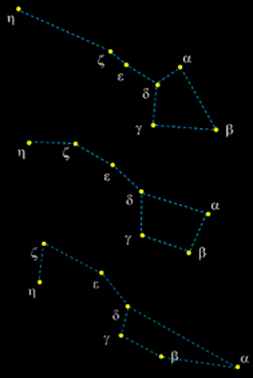

🎯 Цель работы
Формирование осознания роли отечественной науки в освоении и использовании космического пространства и развитии международного сотрудничества в этой области; сформированность собственной позиции по отношению к физической информации, получаемой из разных источников.
📚 Краткие теоретические сведения
Паралла́кс — изменение видимого положения объекта относительно удалённого фона в зависимости от положения наблюдателя. Параллакс используется в геодезии и астрономии для измерения расстояния до удалённых объектов (в частности в специальных единицах — парсеках). На явлении параллакса основано бинокулярное зрение.
Суточный параллакс (геоцентрический параллакс) — разница в направлениях на одно и то же светило из центра масс Земли (геоцентрическое направление) и из заданной точки на поверхности Земли (топоцентрическое направление). Из-за вращения Земли вокруг своей оси положение наблюдателя циклически изменяется. Для наблюдателя, находящегося на экваторе, база параллакса равна радиусу Земли и составляет 6371 км.
При наблюдении Луны её кажущиеся смещения на фоне звёзд (по сравнению с расчётным орбитальным движением) достигают около 2° (соответственно, суточный параллакс равен ~1°) и были замечены уже древнегреческими астрономами, что позволило им достаточно точно определить расстояние до Луны.
Суточный параллакс планет довольно мал (для Марса — порядка 24″ во время великого противостояния), но тем не менее до появления радиолокации он был единственным способом измерения абсолютных расстояний в Солнечной системе. Наиболее удобны были наблюдения прохождений Венеры по диску Солнца и близко подходящих к Земле астероидов. Относительные же расстояния в системе легко определяются на основе законов Кеплера, поэтому достаточно абсолютного измерения какого-либо одного расстояния, чтобы восстановить остальные.
Годичный параллакс — угол, под которым со звезды видна большая полуось земной орбиты, перпендикулярная направлению на звезду. Годичные параллаксы служат показателями расстояний до звёзд. Расстояние, годичный параллакс которого равен 1 угловой секунде, называется парсек (1 парсек = 3,085678·1016 м). Ближайшая к нам звезда Проксима Центавра имеет параллакс 0,7687″, следовательно, расстояние до неё составляет ≈ 1,30090±0,00015 пк.
Все звёзды в Галактике движутся вокруг её центра по почти круговым орбитам, а также обладают собственным движением под действием притяжения других звёзд. Собственные движения звёзд — величины очень малые, поэтому обнаружить их возможно, наблюдая звезды в течение длительных промежутков времени (порядка 100 лет и более). Собственное движение звезды — это её видимое угловое перемещение по небесной сфере в среднем за год; оно определяется из наблюдений изменений экваториальных координат звезды.
Собственное движение звезды – это ее видимое угловое перемещение по небесной сфере в среднем за год. Собственные движения звезд определяются из наблюдений изменения их экваториальных координат
Изучение собственных движений, а также проекций пространственных скоростей звёзд на луч зрения позволяет определить направление и скорость движения Солнца в пространстве, а также обнаружить вращение Галактики.
Пространственные скорости звёзд определяются из наблюдений. Пространственная скорость звезды V состоит из двух компонент — её касательной (тангенциальной) скорости Vt и лучевой скорости Vr.
Тангенциальная скорость Vt определяется по формуле Vt = μ/p а. е. в год, где μ — собственное движение звезды, p — её параллакс; лучевая скорость определяется по величине красного смещения линий в спектре звезды, вызванного эффектом Доплера. Тогда полная скорость звезды определяется формулой:
V = √(Vr² + Vt²)

📋 Задания и инструкции по выполнению
Задание 1: Решить задачи по образцу (приложение 1)
- Собственное движение звезды составляет 0,1” в год. Расстояние до неё 50 пк. Какова тангенциальная скорость звезды?
- В спектре звезды из задачи № 4 предыдущей задачи смещение лабораторной длины волны 5000 A° составляет 0,17 A° . Определите лучевую скорость звезды.
- Определите пространственную скорость звезды, используя ответы к предыдущим задачам (№1 и №2).
- Чему равен суточный параллакс Юпитера в противостоянии?
- Чему равен угловой диаметр Солнца, видимый с Марса?
- На какой географической широте звезда Спика кульминирует на высоте?
- Какова высота Солнца в полдень в день весеннего равноденствия в Новосибирске?
- Каково склонение звёзд, которые в Ростове-на-Дону кульминируют в зените?